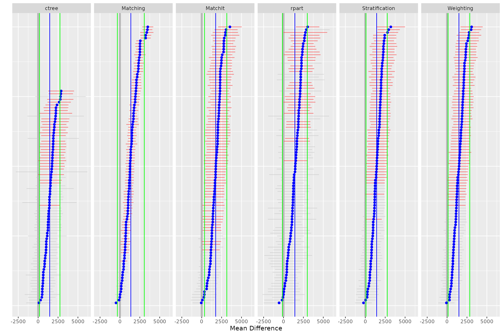
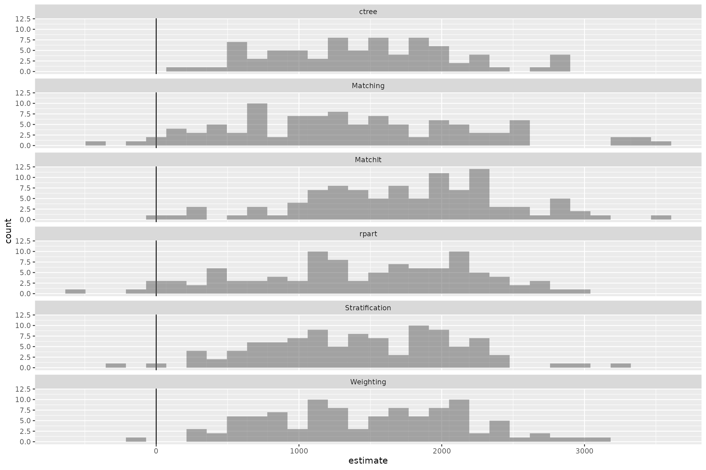
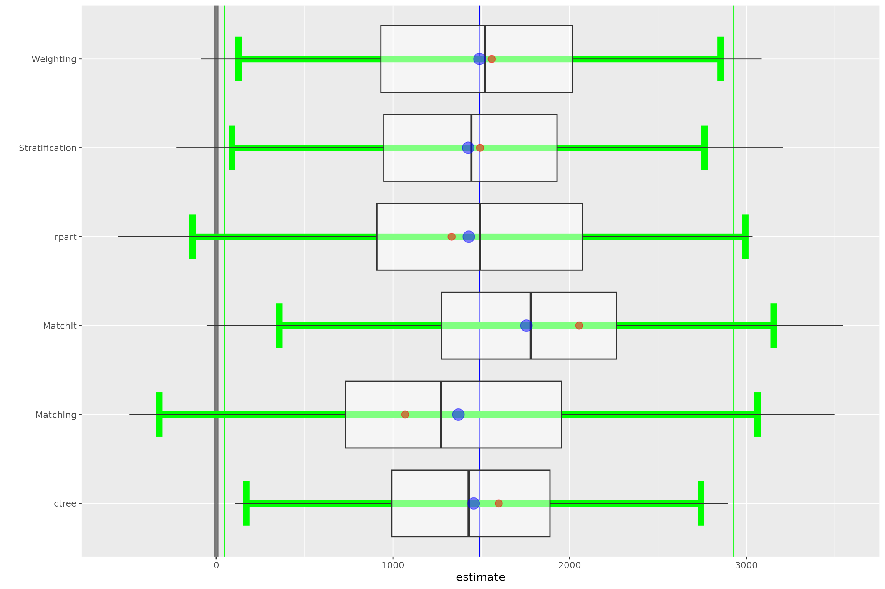
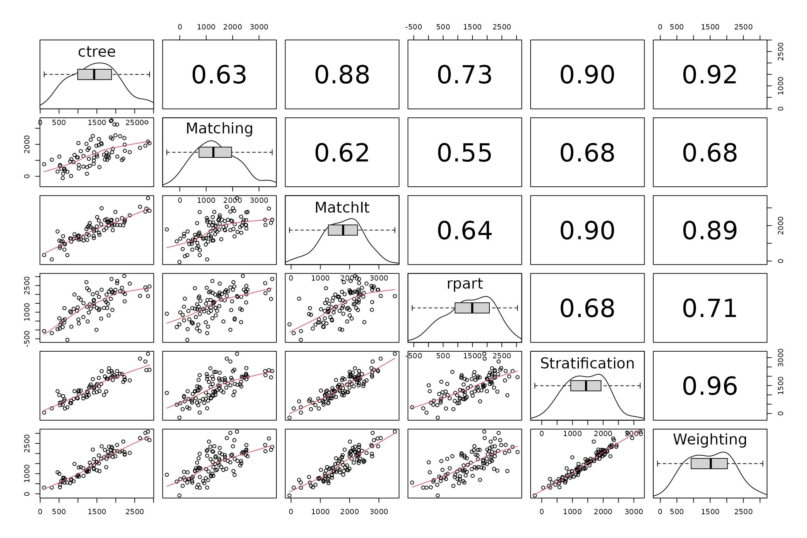
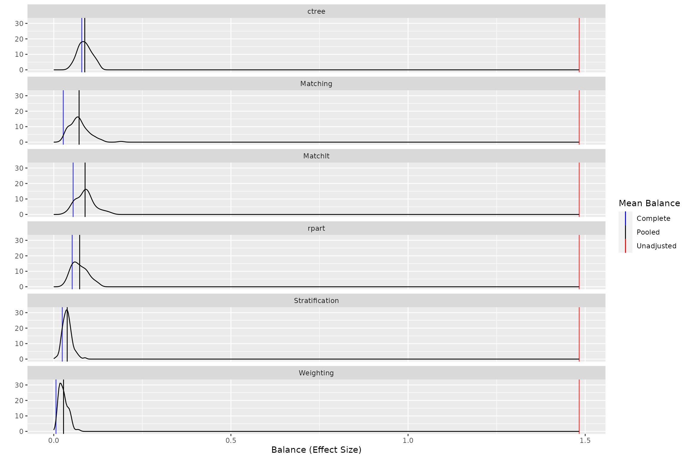
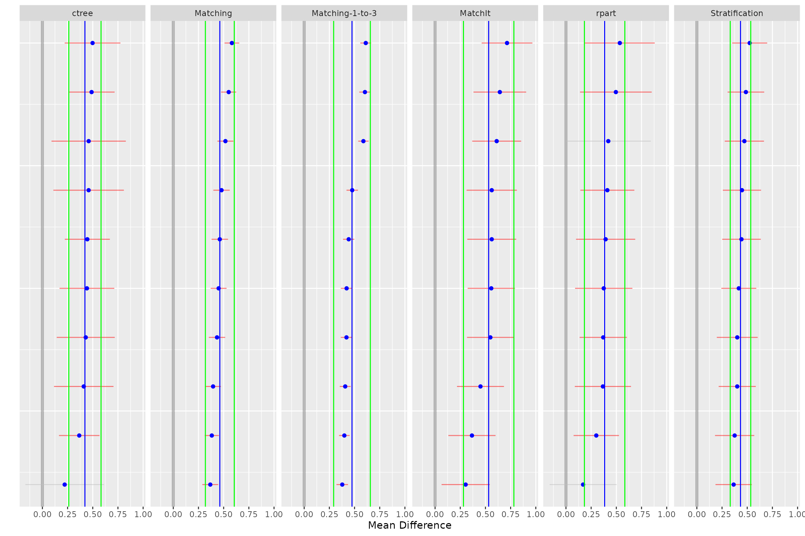

Bootstrapping for Propensity Score Analysis
Jason Bryer, Ph.D.
2023-10-23
Source:vignettes/PSAboot.Rmd
PSAboot.RmdAbstract
As the popularity of propensity score methods for estimating causal effects in observational studies increase, the choices researchers have for which methods to use has also increased. Rosenbaum (2012) suggested that there are benefits for testing the null hypothesis more than once in observational studies. With the wide availability of high power computers resampling methods such as bootstrapping (Efron, 1979) have become popular for providing more stable estimates of the sampling distribution. This paper introduces thePSAboot package for R that provides
functions for bootstrapping propensity score methods. It deviates
from traditional bootstrapping methods by allowing for different
sampling specifications for treatment and control groups, mainly
to ensure the ratio of treatment-to-control observations are
maintained. Additionally, this framework will provide estimates
using multiple methods for each bootstrap sample. Two examples are
discussed: the classic National Work Demonstration and PSID
(Lalonde, 1986) study and a study on tutoring effects on student
grades.
Set the number of bootstrap samples. This should be set to at least 100 but kept small to reduce the execution time for CRAN submissions.
boot.M <- 10NOTE: This vignette uses 10 bootstrap samples. It is generally recommended to use at least 100 bootstrap samples or more for final publication.
Introduction
The latest version of the PSAboot package can be
downloaded from Github using the devtools package.
devtools::install_github('jbryer/PSAboot')The PSAboot function will perform the actual
bootstrapping. It has a number of parameters for to specify how the
bootstrap samples are drawn.
-
Tr- a numeric (0 for control and 1 for treatment) or logical vector of treatment indicators. -
Y- a numeric vector with the outcome of interest. -
X- a data frame of covaraites. -
M(default is 100) - the number of bootstrap samples to draw. -
formu- the formula for estimating the propensity scores in phase I. Note that the dependent variable does not need to be specified as it will be replaced when combining theTrvector andXdata frame. -
control.ratio(default is 5) - This specifies the sample size of control units as a ratio of treatment units. For example, with a default value of 5 and 100 treatment units, this methods will sample 500 control units for each sample, or the number of control units if smaller than 500. When the ratio of treatment-to-control units increases, the range of propensity scores (using logistic regression) shrinks. Randomly selecting a subset of control units often results in wider and better overlapping distribution of propensity scores. See the thePSrangesfunction in themultilevelPSApackage for more information. -
control.sample.size(default is 5 times the number of treatment units) - The number of control units to sample for each bootstrap sample. If specified, this overrides thecontrol.ratioparameter. -
control.replace(default isTRUE) - Specify whether random sampling of control units does so with replacement. -
treated.sample.size(default is the number of treatment units) - The number of treatment units to sample for each bootstrap sample. -
treated.replace(default isTRUE) - Specify whether random sampling of treatment units does so with replacement. -
methods- A list of functions to perform a propensity score analysis for each bootstrap sample. See the methods section below. -
parallel(default isTRUE) - Whether the bootstrapping procedure should be run in parallel. -
seed- Seed used for the random number generator. If specified, the random seed will be set toseed + iwhereiis the current bootstrap sample in (1, M).
Other parameters can be passed to methods using the
... parameter.
Methods
The methods parameter on the PSAboot
function specifies the different propensity score methods that will be
used. Specifically, for each bootstrap sample drawn, each function will
be called. This allows for a comparison of methods across all bootstrap
samples. Five methods are included, they are:
-
boot.strata- This method estimates propensity scores using logistic regression and stratifies using quintiles on the propensity scores. Effects within each strata are estimated and aggregated. -
boot.ctree- This method creates strata using conditional inference trees vis-a-vis thectreefunction in thepartypackage. Effects within each strata (i.e. leaf node) are estimated and aggregated. -
boot.rpart- This method creates strata using classification trees vis-a-vis therpartfunction. Effects within each strata (i.e. leaf node) are estimated and aggregated. -
boot.matching- This method finds matched pairs using theMatchfunction in theMatchingpackage. A paired dependent sample t-test is used to estimate effect sizes. -
boot.matchit- This method finds match pairs using thematchitfunction in theMatchItpackage. A paired dependent sample t-ttest is used to estimate effect sizes.
Defining Custom Methods
It is possible to define a custom method. Each method is a function with, at minimum, the following six parameters:
-
Tr- A logical or integer (0 and 1) vector with treatment indicators. -
Y- A numeric vector representing the outcome. -
X- A data frame with the covariates. -
X.trans- A data frame with factor levels dummy coded. -
formu- A formula for estimating propensity scores in phase one. -
...- Other parameters passed through from thePSAbootfunction.
Each method must return a list with three elements:
-
summary- This must be a named numeric vector with at minimumestimate,ci.min, andci.max, however other values allowed. -
balance- This must be a named numeric vector with one element per covariate listed inX.transrepresenting a balance statistic. It is recommended, and the implementation for the built-in methods, to use an absolute standardized effect size. As will be shown below, the summary and plotting functions will include an adjusted balance statistic (i.e. effect size) before adjustment for comparison. -
details- This can be an arbitrary object, typically the result of the underlying method used.
For example, the boot.matching.1to3 function below wraps
the built-in boot.matching method but sets the
M parameter to 3, thereby performing 1-to-3 matching
instead of the default 1-to-1 matching. This framework simplifies the
process of using, and comparing, slight variations of different
propensity score methods.
boot.matching.1to3 <- function(Tr, Y, X, X.trans, formu, ...) {
return(boot.matching(Tr=Tr, Y=Y, X=X, X.trans=X.trans, formu=formu, M=3, ...))
}The PSAboot function returns an object of class
PSAboot. The following S3 methods are implemented:
print, summary, plot,
boxplot, and matrixplot.
Example One: National Work Demonstration and PSID
The lalonde (Lalonde, 1986) has become the de
defacto teaching dataset in PSA since Dehejia and Wahba’s (1999)
re-examination of the National Supported Work Demonstration (NSW) and
the Current Population Survey (CPS).
The lalonde data set is included in the
Matching package. The contingency table shows that there
are 429 control units and 185 treatment units.
##
## 0 1
## 260 185
lalonde.formu <- treat~age + I(age^2) + educ + I(educ^2) + black +
hisp + married + nodegr + re74 + I(re74^2) + re75 + I(re75^2) +
u74 + u75
boot.lalonde <- PSAboot(Tr = lalonde$treat,
Y = lalonde$re78,
X = lalonde,
formu = lalonde.formu,
M = 100,
seed = 2112)The summary function provides numeric results for each
method including the overall estimate and confidence interval using the
complete sample as well as the pooled estimates and confidence intervals
with percentages of the number of confidence intervals that do not span
zero.
summary(boot.lalonde)## Stratification Results:
## Complete estimate = 1493
## Complete CI = [231, 2755]
## Bootstrap pooled estimate = 1426
## Bootstrap weighted pooled estimate = 1376
## Bootstrap pooled CI = [89.1, 2762]
## 59% of bootstrap samples have confidence intervals that do not span zero.
## 59% positive.
## 0% negative.
## ctree Results:
## Complete estimate = 1598
## Complete CI = [-6.62, 3203]
## Bootstrap pooled estimate = 1457
## Bootstrap weighted pooled estimate = 1463
## Bootstrap pooled CI = [170, 2743]
## 39% of bootstrap samples have confidence intervals that do not span zero.
## 39% positive.
## 0% negative.
## rpart Results:
## Complete estimate = 1332
## Complete CI = [-295, 2959]
## Bootstrap pooled estimate = 1429
## Bootstrap weighted pooled estimate = 1442
## Bootstrap pooled CI = [-136, 2993]
## 32% of bootstrap samples have confidence intervals that do not span zero.
## 32% positive.
## 0% negative.
## Matching Results:
## Complete estimate = 1069
## Complete CI = [396, 1742]
## Bootstrap pooled estimate = 1370
## Bootstrap weighted pooled estimate = 1364
## Bootstrap pooled CI = [-322, 3062]
## 83% of bootstrap samples have confidence intervals that do not span zero.
## 83% positive.
## 0% negative.
## MatchIt Results:
## Complete estimate = 2053
## Complete CI = [657, 3450]
## Bootstrap pooled estimate = 1755
## Bootstrap weighted pooled estimate = 1745
## Bootstrap pooled CI = [356, 3154]
## 74% of bootstrap samples have confidence intervals that do not span zero.
## 74% positive.
## 0% negative.
## Weighting Results:
## Complete estimate = 1558
## Complete CI = [310, 2807]
## Bootstrap pooled estimate = 1489
## Bootstrap weighted pooled estimate = 1440
## Bootstrap pooled CI = [126, 2853]
## 64% of bootstrap samples have confidence intervals that do not span zero.
## 64% positive.
## 0% negative.The plot function plots the estimate (mean difference)
for each bootstrap sample. The default is to sort from largest to
smallest estimate for each method separately. That is, rows do not
correspond across methods. The sort parameter can be set to
none for no sorting or the name of any method
to sort only based upon the results of that method. In these cases the
rows then correspond to matching bootstrap samples. The blue points
correspond to the the estimate for each bootstrap sample and the
horizontal line to the confidence interval. Confidence intervals that do
not span zero are colored red. The vertical blue line and green lines
correspond to the overall pooled estimate and confidence for each
method, respectively.
plot(boot.lalonde)
The hist function plots a histogram of the estimates
across all bootstrap samples for each method.
hist(boot.lalonde)
The boxplot function depicts the distribution of
estimates for each method along with confidence intervals in green.
Additionally, the overall pooled estimate and confidence interval across
all bootstrap samples and methods are represented by the vertical blue
and green lines, respectively.
boxplot(boot.lalonde)
The matrixplot summarizes the estimates across methods
for each bootstrap sample. The lower half of the matrix are scatter
plots where each point represents the one bootstrap sample. The red line
is a Loess regression line. The main diagonal depicts the distribution
of effects and the upper half provides the correlation of estimates. In
the following example we see that the ctree and
Stratification methods have the strongest agreement with a
correlation of 0.63 whereas the rpart and
MatchIt methods have the least agreement with a correlation
of 0.22.
matrixplot(boot.lalonde)
Evaluating Balance
The strength of propensity score analysis relies on achieving good
balance. Typically one would evaluate each covariate separately to
ensure that sufficient balance has been achieved. We recommend Helmreich
and Pruzek (2009) for a more complete discussion of visualizations to
evaluate balance. Given the large number of samples and methods used, it
is desirable to have a single metric to evaluate balance. Drawing on the
principles of the multiple covariate balance assessment plot (Helmreich
& Pruzek, 2009), the balance function will estimate the
effect of each covariate before and after adjustment. Moreover, to
provide a single metric for each sample and method, the mean
standardized effect size will be used.
lalonde.bal <- balance(boot.lalonde)
lalonde.bal## Unadjusted balance: 1.48309081605193
## Complete Bootstrap
## Stratification 0.024000000 0.03798000
## ctree 0.079000000 NA
## rpart 0.052000000 0.07308000
## Matching 0.026830233 0.07148576
## MatchIt 0.054672952 0.08836800
## Weighting 0.006256676 0.02756140The plot function provides density plots of the balance
statistics across all bootstrap samples for each method. The mean
overall balance is represented by the vertical black lines, the overall
balance for the complete dataset is represented by the vertical blue
line, and the adjusted balance is represented by the vertical red line.
Although no specific guidelines are recommended in the literature,
achieving a balance of less than 0.1 is desirable. In this example we
see that PSA has reduce the bias in all methods although
rpart, and to a lesser extent MatchIt, did not
reduce the bias by as much as would be typically desired.
plot(lalonde.bal)
The boxplot function provides a more nuanced depiction
of the balance by separating on the distribution of balance statistics
by individual covariate. In addition to the boxplot of balance
statistics, the mean balance statistic is represented by the blue point
and the unadjusted balance statistic by the red point. We see that the
largest imbalance was in the black, married,
and re74 (real earnings in 1974) before adjustment. All of
the estimates reduced the bias in these covariates although it is worth
noting that the MatchIt method did not reduce the bias in
the black covariate to a desirable level.
This figure, in conjunction with the density plot above, show that
the relatively large mean balance for rpart is likely due
to some outlier samples where the adjusted balance for
educ, re75, and hispan are fairly
large. It should be noted that with these exceptions, balance for each
covariates are generally less than the unadjusted balance.
boxplot(lalonde.bal)Example Two: Effectiveness of Tutoring on Course Grades
This example utilizes a dataset in the TriMatch package
that provides student data in online English courses. The original study
examined the effects of tutoring on English course grades. In the
original study two treatments were defined, those who used tutoring
services once and those who used tutoring services two or more times
during the course term. The outcome of interest was course grade (0=F,
1=D, 2=C, 3=B, 4=A). For our purposes here we will consider only one
treatment group: students who used tutoring services at least once
during the course.
require(TriMatch)
require(PSAboot)
data(tutoring, package='TriMatch')
tutoring$treatbool <- tutoring$treat != 'Control'
covs <- tutoring[,c('Gender', 'Ethnicity', 'Military', 'ESL', 'EdMother', 'EdFather',
'Age', 'Employment', 'Income', 'Transfer', 'GPA')]
table(tutoring$treatbool)##
## FALSE TRUE
## 918 224
tutoring.boot <- PSAboot(Tr=tutoring$treatbool,
Y=tutoring$Grade,
X=covs,
seed=2112,
M=boot.M,
control.sample.size=918, control.replace=TRUE,
treated.sample.size=224, treated.replace=TRUE,
methods=c('Stratification'=boot.strata,
'ctree'=boot.ctree,
'rpart'=boot.rpart,
'Matching'=boot.matching,
'Matching-1-to-3'=boot.matching.1to3,
'MatchIt'=boot.matchit)
)
summary(tutoring.boot)## Stratification Results:
## Complete estimate = 0.482
## Complete CI = [0.3, 0.665]
## Bootstrap pooled estimate = 0.433
## Bootstrap weighted pooled estimate = 0.43
## Bootstrap pooled CI = [0.331, 0.535]
## 100% of bootstrap samples have confidence intervals that do not span zero.
## 100% positive.
## 0% negative.
## ctree Results:
## Complete estimate = 0.458
## Complete CI = [0.177, 0.739]
## Bootstrap pooled estimate = 0.422
## Bootstrap weighted pooled estimate = 0.423
## Bootstrap pooled CI = [0.262, 0.582]
## 90% of bootstrap samples have confidence intervals that do not span zero.
## 90% positive.
## 0% negative.
## rpart Results:
## Complete estimate = 0.475
## Complete CI = [0.165, 0.784]
## Bootstrap pooled estimate = 0.384
## Bootstrap weighted pooled estimate = 0.381
## Bootstrap pooled CI = [0.183, 0.584]
## 80% of bootstrap samples have confidence intervals that do not span zero.
## 80% positive.
## 0% negative.
## Matching Results:
## Complete estimate = 0.479
## Complete CI = [0.388, 0.571]
## Bootstrap pooled estimate = 0.462
## Bootstrap weighted pooled estimate = 0.46
## Bootstrap pooled CI = [0.319, 0.605]
## 100% of bootstrap samples have confidence intervals that do not span zero.
## 100% positive.
## 0% negative.
## Matching-1-to-3 Results:
## Complete estimate = 0.472
## Complete CI = [0.411, 0.533]
## Bootstrap pooled estimate = 0.475
## Bootstrap weighted pooled estimate = 0.465
## Bootstrap pooled CI = [0.293, 0.657]
## 100% of bootstrap samples have confidence intervals that do not span zero.
## 100% positive.
## 0% negative.
## MatchIt Results:
## Complete estimate = 0.513
## Complete CI = [0.264, 0.762]
## Bootstrap pooled estimate = 0.532
## Bootstrap weighted pooled estimate = 0.529
## Bootstrap pooled CI = [0.282, 0.782]
## 100% of bootstrap samples have confidence intervals that do not span zero.
## 100% positive.
## 0% negative.
plot(tutoring.boot)
hist(tutoring.boot)
boxplot(tutoring.boot)
matrixplot(tutoring.boot)
tutoring.bal <- balance(tutoring.boot)
tutoring.bal## Unadjusted balance: 1.83221548386189
## Complete Bootstrap
## Stratification 0.02923077 0.03361538
## ctree 0.04384615 0.07207692
## rpart 0.07846154 0.08769231
## Matching 0.04521604 0.05690085
## Matching-1-to-3 0.03054791 0.05275685
## MatchIt 0.05078077 0.06666851
plot(tutoring.bal)
boxplot(tutoring.bal)References
Bryer, J.M. (2013). TriMatch: Propensity Score Matching of Non-Binary Treatments. R package version 0.9.1. https://github.com/jbryer/TriMatch
Helmreich, J.E., Pruzek, R.M. (2009). PSAgraphics: An R Package to Support Propensity Score Analysis. Journal of Statistical Software 29(6), 1-23. https://www.jstatsoft.org/v29/i06/.
Ho, D.E., Imai, K., King, G., & Stuart, E.A. (2011). MatchIt: Nonparametric Preprocessing for Parametric Causal Inference. Journal of Statistical Software, (42) 8, 1-28. URL https://www.jstatsoft.org/v42/i08/
Hothorn, T., Hornik, K., & Zeileis, A. (2006). Unbiased Recursive Partitioning: A Conditional Inference Framework. Journal of Computational and Graphical Statistics, 15(3), 651-674.
Lalonde, R. (1986). Evaluating the econometric evaluations of training programs with experimental data. American Economic Review 76: 604-620.
Dehejia, R.H. and Wahba, S. (1999). Causal Effects in Nonexperimental Studies: Re-Evaluating the Evaluation of Training Programs. Journal of the American Statistical Association 94: 1053-1062.
R Core Team (2013). R: A language and environment for statistical computing. R Foundation for Statistical Computing, Vienna, Austria. URL https://www.r-project.org/.
Rosenbaum, P.R. (2012). Testing one hypothesis twice in observational studies. Biometrika, 99, 4, 763-774.
Rosenbaum, P.R., & Rubin, D.B. (1983). The central role of the propensity score in observational studies for causal effects. Biometrika, 70, 1, 41-55.
Sekhon, J.S. (2011). Multivariate and Propensity Score Matching Software with Automated Balance Optimization: The Matching Package for R. Journal of Statistical Software, 42(7), 1-52. URL https://www.jstatsoft.org/v42/i07/.
Therneau, T., Atkinson, B., & Ripley, B. (2013). rpart: Recursive Partitioning. R package version 4.1-3. https://cran.r-project.org/package=rpart